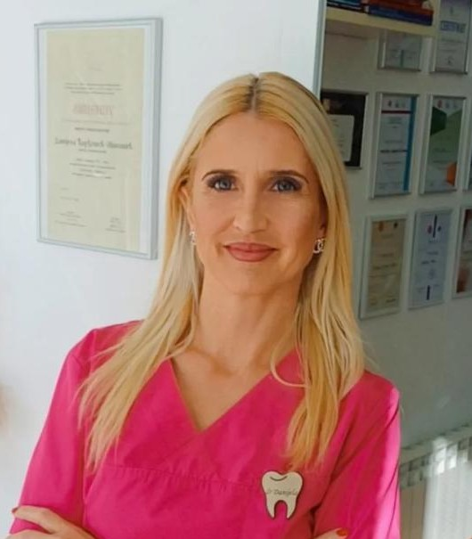
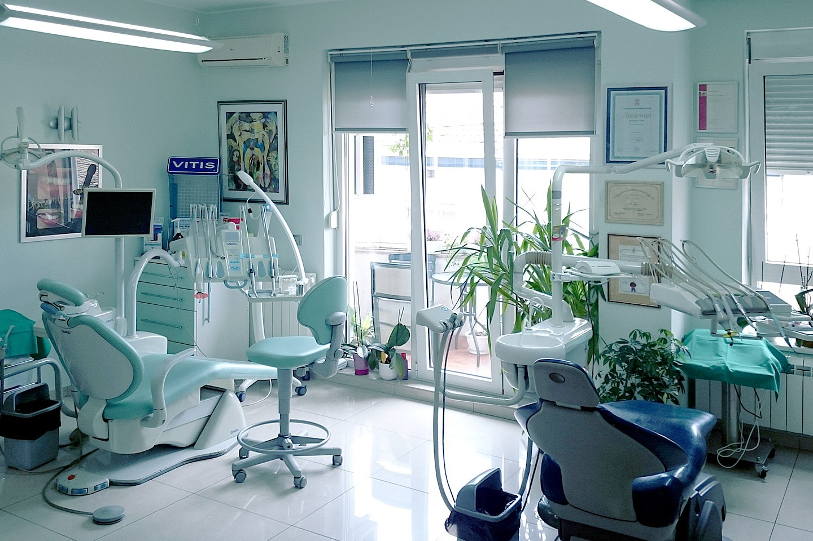
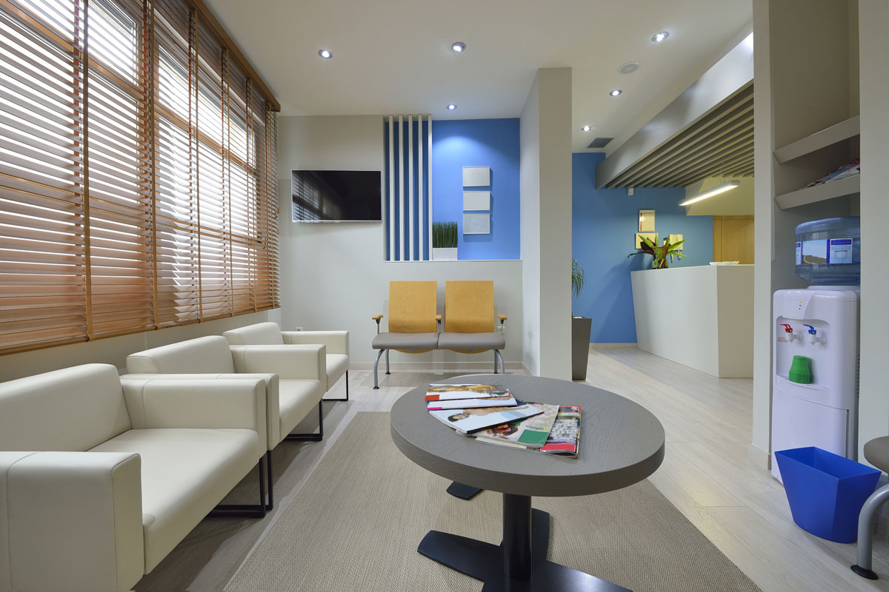
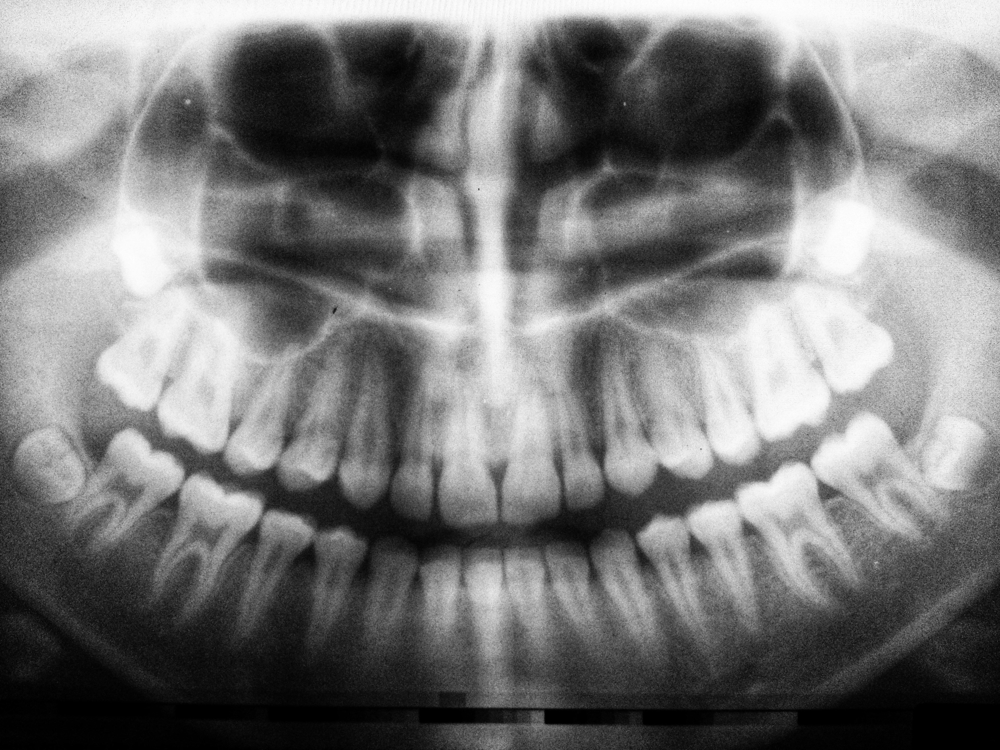
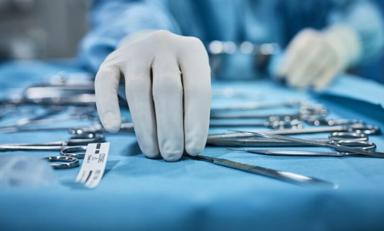
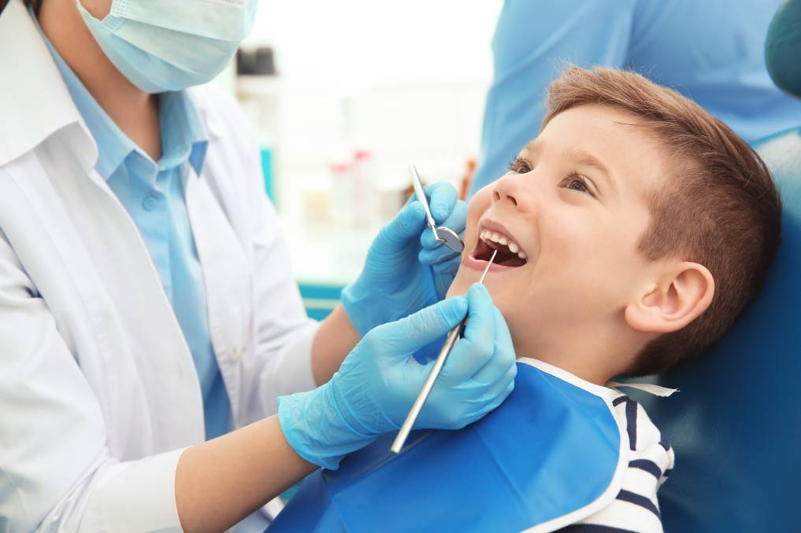
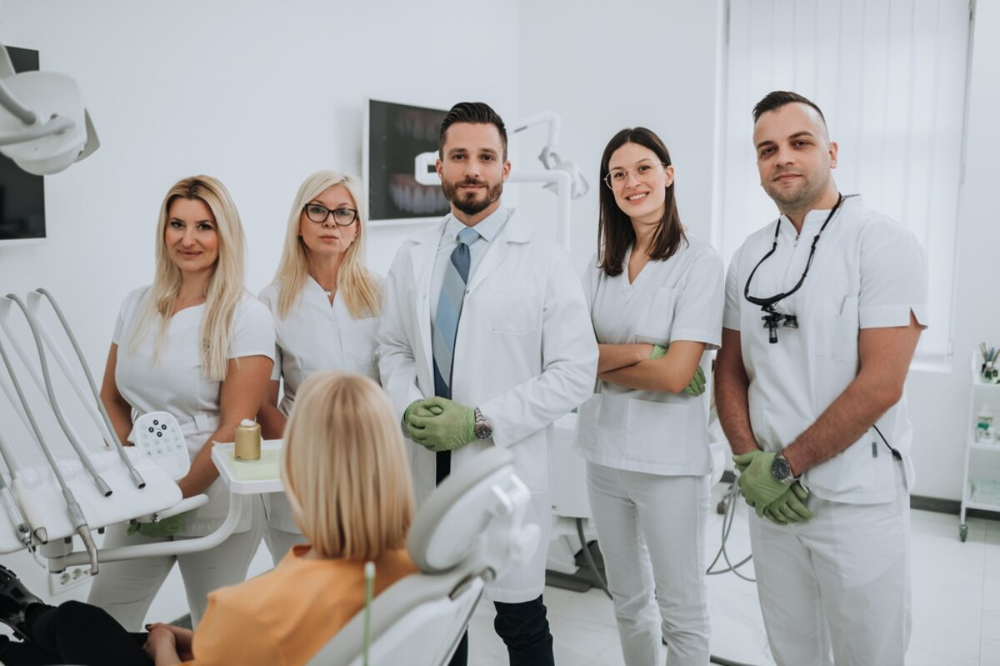
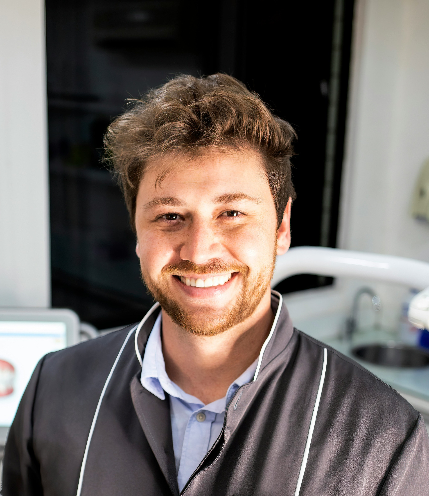

Dr. Amra Hodžić
Specijalista oralne hirurgije
15 godina iskustva u oralnoj hirurgiji i implantologiji.
Dental Centar dr. Butković iz Živinica pruža savremene stomatološke usluge uz profesionalan i individualan pristup svakom pacijentu. Ordinacija uspješno radi od 2022. godine, sa fokusom na kvalitet, sigurnost i ugodnu atmosferu. Nalazimo se na adresi FM23+C6P, Živinice 75270, gdje uz modernu opremu i stručan tim brinemo o zdravlju i estetici vašeg osmijeha. Pružamo širok spektar stomatoloških usluga

Redovni stomatološki pregled temelj je zdravih zuba i svježeg osmijeha. Naši doktori provode detaljan pregled svakog zuba, desni i mekih tkiva, te daju personalizovane savjete za oralnu higijenu.
Postignite blistav osmijeh uz naše profesionalne tretmane izbjeljivanja i estetske korekcije. Prilagođavamo svaki tretman individualnim potrebama i željama pacijenta, koristeći najsigurnije i najefikasnije metode.
Ispravna pozicija zuba važna je i za izgled i za zdravlje. Nudimo moderne ortodontske aparatiće za sve uzraste, od klasičnih metalnih do gotovo nevidljivih prozirnih udlaga, uz stalno praćenje i podršku tokom cijelog tretmana.

Metalni fiksni aparatić — Dental Centar
Zubne fasete tanke su ljuske koje se postavljaju na prednju površinu zuba i trenutno transformišu osmijeh. Idealne su za korekciju oblika, boje i manjih nepravilnosti, uz minimalno brušenje prirodnog zuba.
| Usluga | Opis | Trajanje | Cijena (KM) |
|---|---|---|---|
| Pregled zuba | Kompletan pregled zuba, desni i mekih tkiva | 30 min | 30 KM |
| Digitalni rendgen | OPG panoramski snimak sa analizom | 15 min | 50 KM |
| Bijela plomba | Kompozitna plomba boje zuba (po zubu) | 45-60 min | 80-120 KM |
| Izbjeljivanje zuba | Profesionalni in-office tretman, oba vilice | 90 min | 250 KM |
| Vađenje zuba | Jednostavna ekstrakcija uz lokalnu anesteziju | 20-30 min | 60 KM |
| Keramička faseta | Tanka keramička ljuska po zubu | 2 posjete | 350 KM/zub |
| Metalni aparatić | Fiksni ortodontski aparat, postavljanje | 60-90 min | 1.200 KM |
| Dječji pregled | Pregled + savjeti o higijeni za djecu do 12 god. | 20 min | 20 KM |
| Dentalni implant | Titan implantat + kruna (sve uključeno) | Više posjeta | od 1.800 KM |
|
|
Pogledajte naše moderne prostore i opremu.







Upoznajte stručnjake koji brinu o vašem osmijehu. Svaki član našeg tima posjeduje višegodišnje iskustvo i kontinuirano se usavršava kako bismo vam pružili najbolju moguću njegu.

Specijalista oralne hirurgije
15 godina iskustva u oralnoj hirurgiji i implantologiji.

Ortodont
Specijalista za ispravljanje zuba i ortodontske terapije.
Pedijatrijski stomatolog
Specijalizovan za rad sa djecom i prevenciju karijesa.